Су астында
Адамдар және су асты әлемі. Сапарларда түсіремін: Мысыр, Вьетнам, Таиланд.

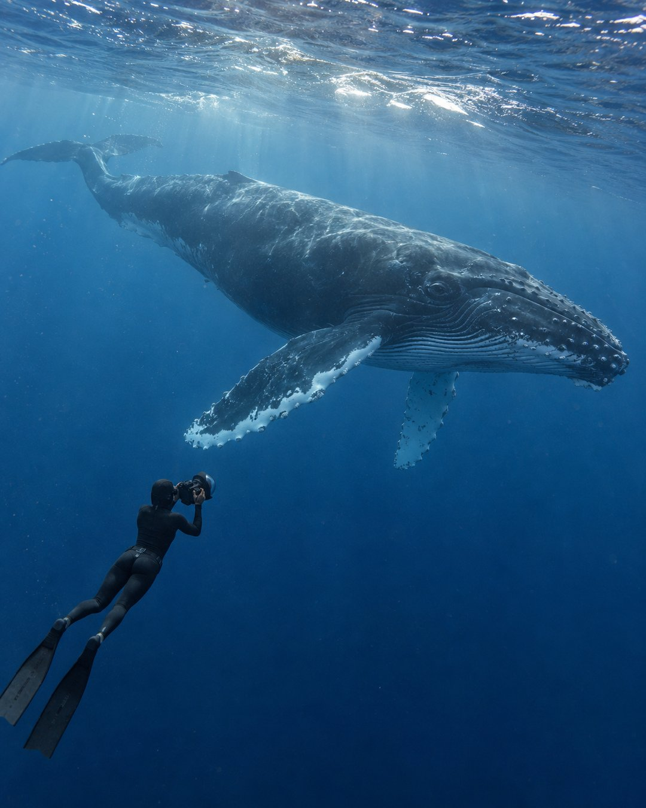

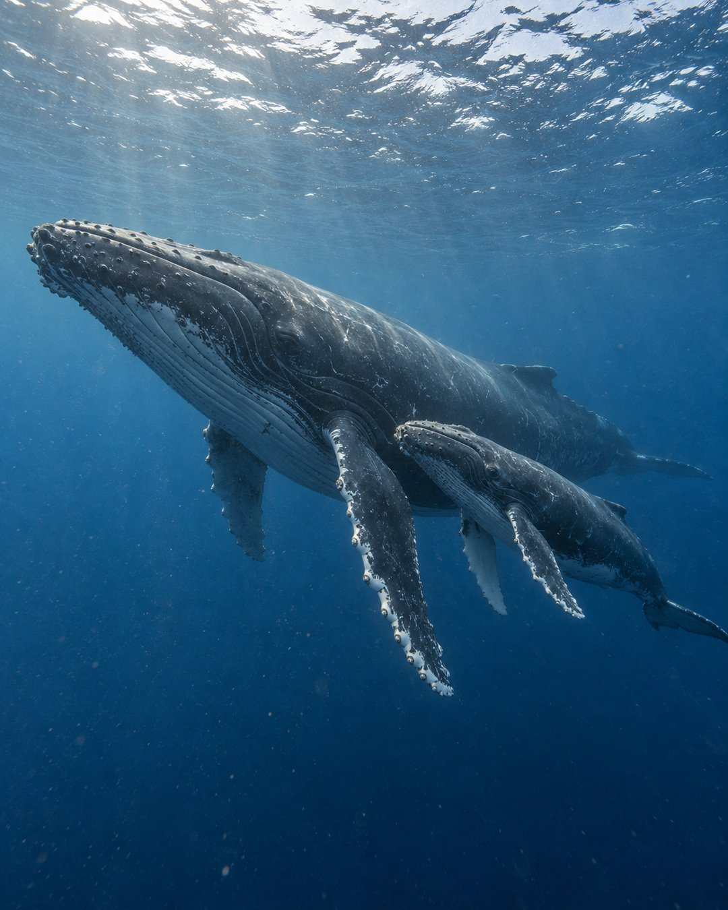

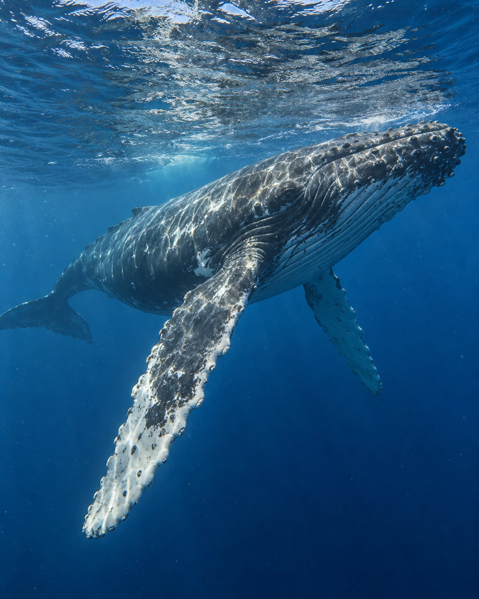

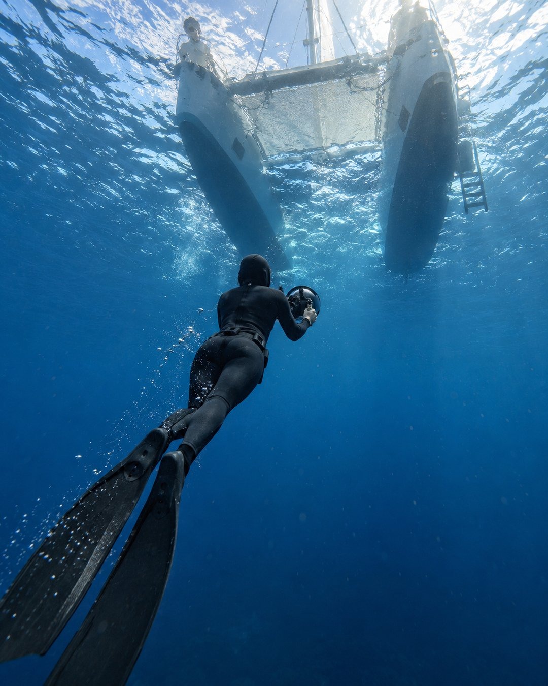

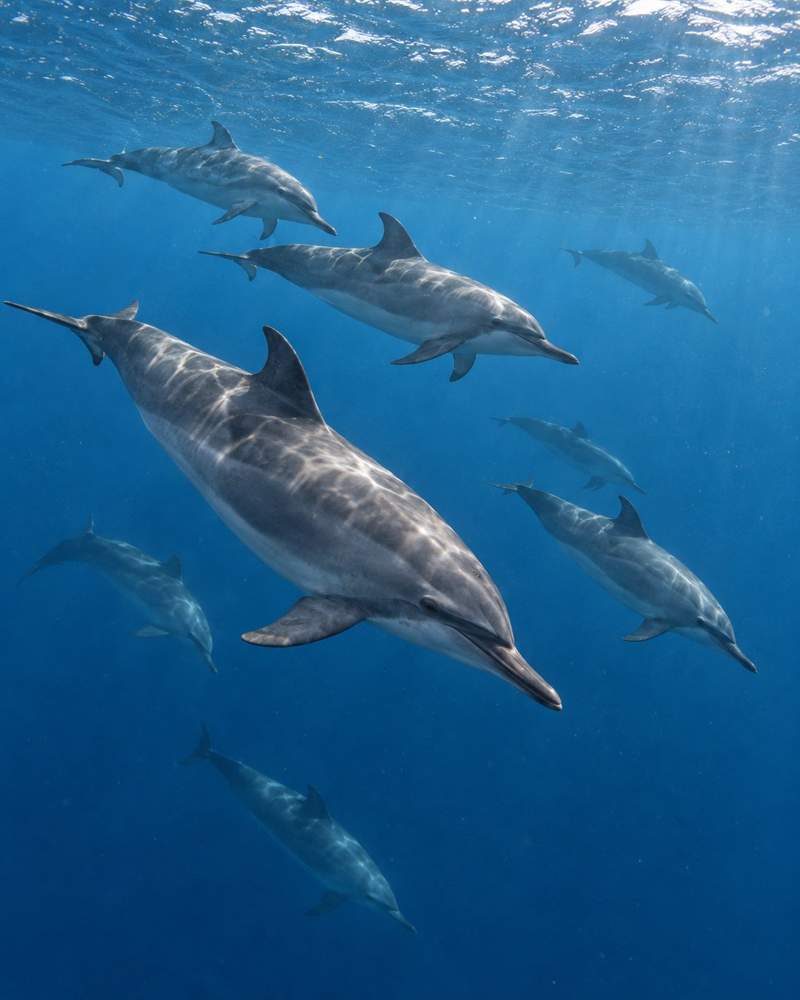

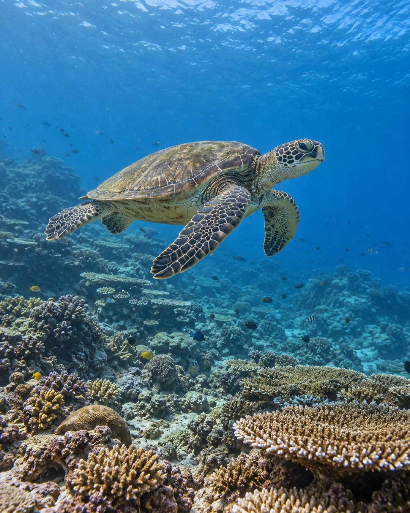

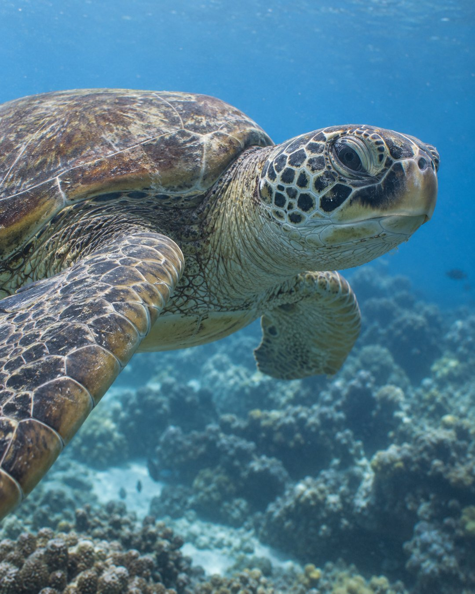

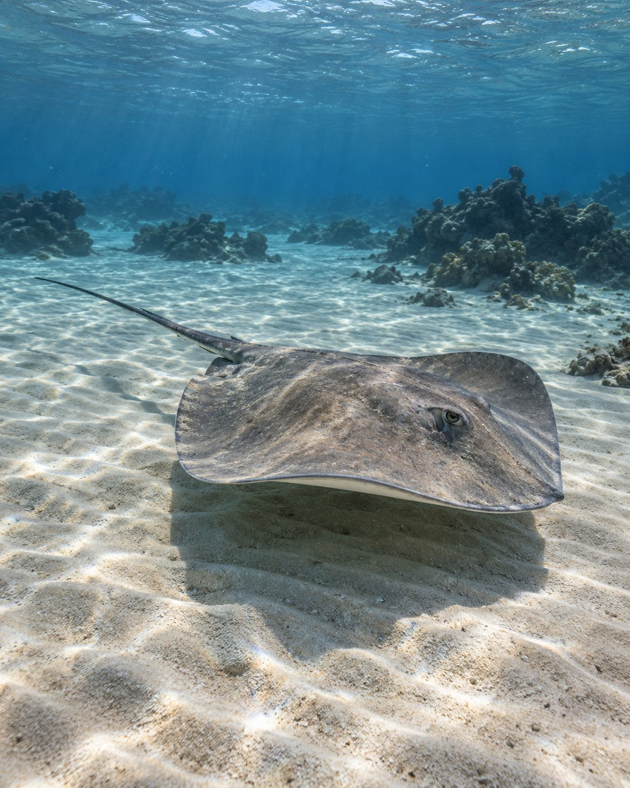

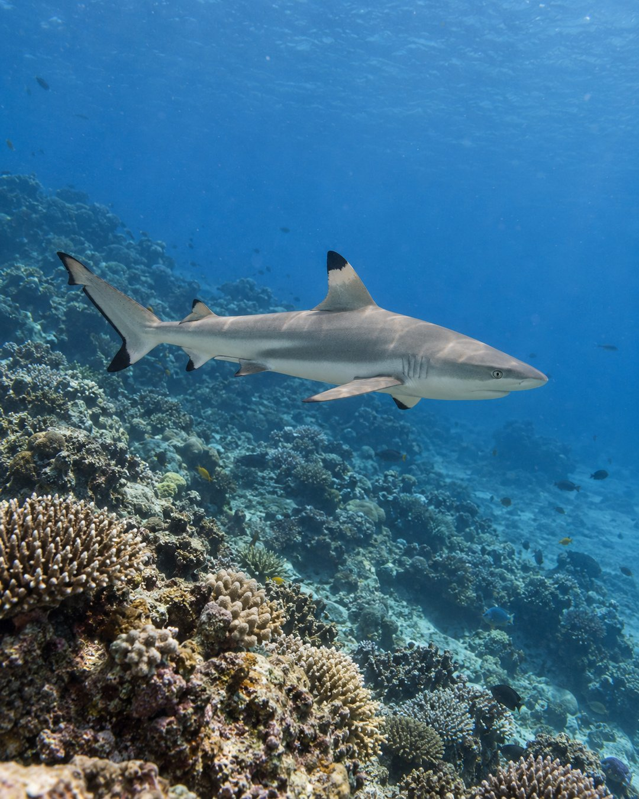

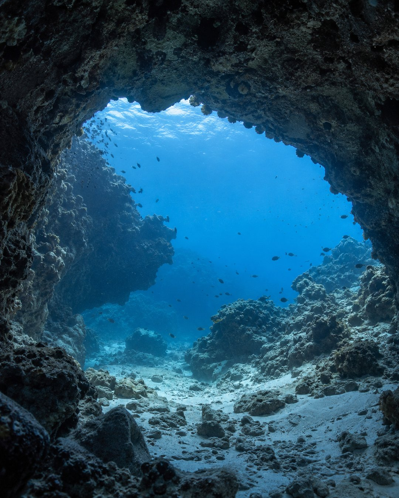

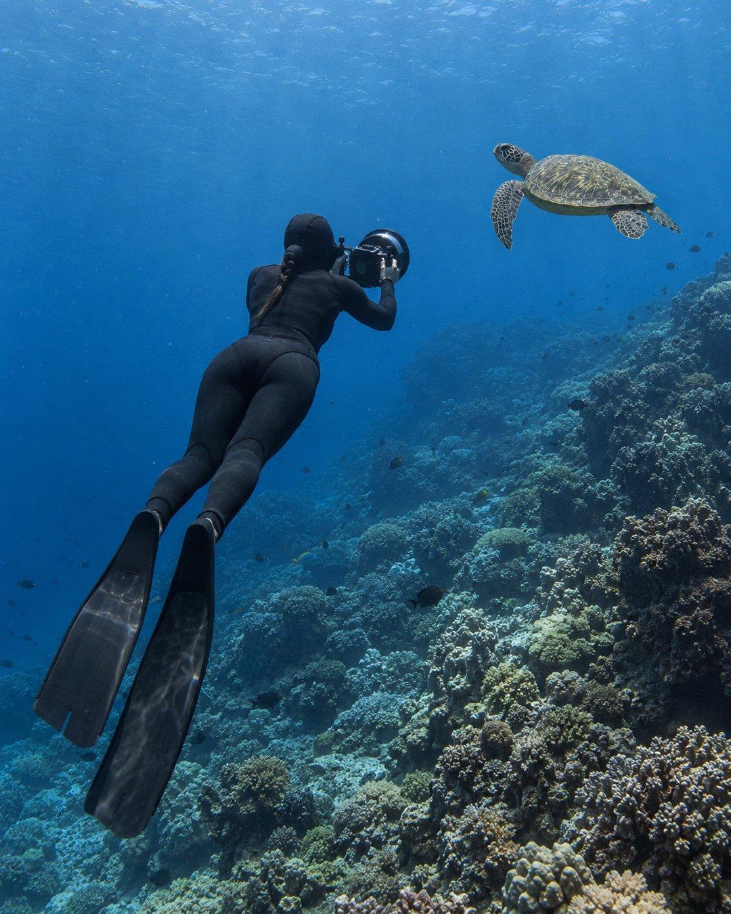

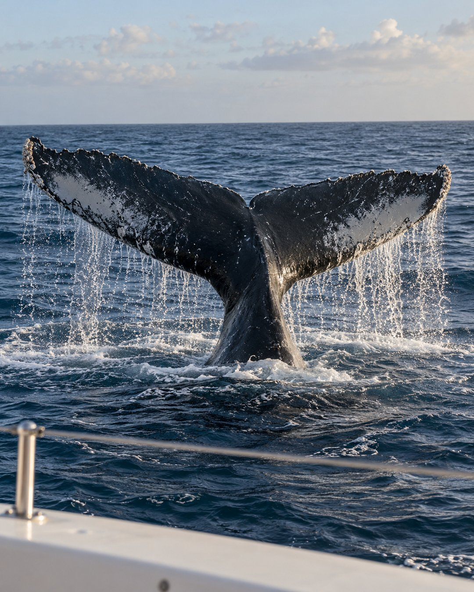
Не кіреді
- Су астындағы портрет пен қозғалыстағы түсірілім
- Су асты әлемі: рифтер мен олардың тұрғындары
- Күндер сапарларыма байланысты, алдын ала жазыңыз
Бағасы
Бағасы сұраныс бойынша
Директке жазыңыз: бағасын, бос күндерді айтып, форматты таңдауға көмектесемін. Өзім жауап беремін.
Бағасын білу